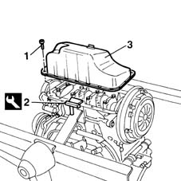

1020A24 crank case oil sump - r + r clean seals for sealant application with engine removed
- Path
- Procedures > 10 ENGINE UNIT > 1020 CRANKCASE SUMP AND COVERS > 1020A crank case oil sump > 1020A24 crank case oil sump - r + r clean seals for sealant application with engine removed
- Kind
- repair procedure (removal / refitting; the operation number is the code)
- Applies to
- engines: 1.6 16v; all production periods
- Interactive page
- https://sloeber94.github.io/elrnDB-fMltpl/en/#/2892342
Applies to: engines: 1.6 16v; all production periods
 Removing
Removing
 Refitting
Refitting1004D40 engine - position on stand and remove
1. Undo the bolts fixing the oil sump to the cylinder block/crankcase.
2. Using the tool (2a), cut the silicon sealant along the entire perimeter of the oil sump.
 | Name | Country |
|---|---|---|
2a | Blade | 1.870.718.000 |
3. Remove the crankcase sump.

Applies to: engines: 1.6 16v; all production periods
Refitting
RemovingClean the crankcase and oil sump contact surfaces to remove traces of silicone sealant.
Apply silicone sealant around the edge of the crankcase sump.
Fit the oil sump to the crankcase.
Tighten the oil sump fixing bolts to torque.
 | Fastening | Component | Ø | Value (daNm) |
|---|---|---|---|---|
- | Bolt | OIL SUMP | M6 | 0.9 |